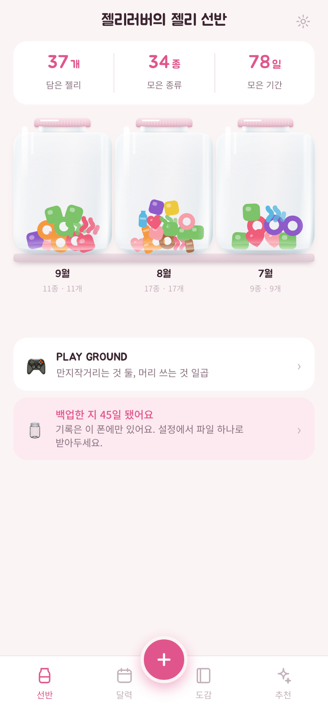

첫 화면
젤리 선반
앱을 켜면 제일 먼저 나오는 화면. 지금까지 모은 병이 최신 달부터 나란히 놓입니다. 병을 누르면 그 달 안으로 들어가요.
- 위쪽 숫자 셋은 담은 젤리 · 모은 종류 · 모은 기간
- 한 개도 안 먹은 달도 빈 병으로 남습니다. 쉬어간 달이 보이는 게 기록이니까요
- 제목의 이름은 설정에서 바꿀 수 있어요
- 아래로 내리면 PLAY GROUND — 기록과 상관없는 장난감 둘이 따로 모여 있습니다